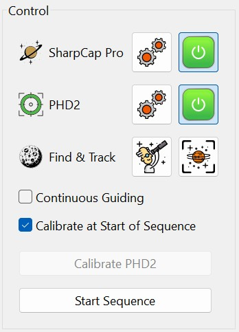
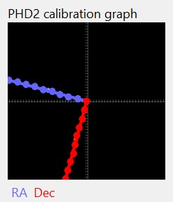

This section provides a step-by-step guide for using HelioMaker to optimize guiding and imaging. While the process may initially seem complex, HelioMaker is designed to simplify your workflow, minimizing the need for manual adjustments or constant monitoring to correct target drift. Additionally, HelioMaker speeds up the setup process, allowing you to begin imaging more quickly. Once properly configured with the appropriate detection and guiding parameters, you can achieve effective autoguiding and seamless image capture, freeing you to focus on other tasks or leave the system running unattended when conditions allow.
For the best experience, follow these steps carefully.
Ensure your imaging gear is fully assembled and connected to your computer with all required software installed, as outlined in the Installation and Prerequisites section.
Make sure that HelioMaker is properly configured as outlined in Configuration And Setup section. These steps must be performed at least once before initial use:
Start HelioMaker and use its link buttons to launch both SharpCap Pro and PHD2. First, connect SharpCap Pro to HelioMaker, followed by PHD2. Ensure that all equipment (camera, mount, etc.) is properly connected. If the PHD2 equipment profile uses the Virtual Planetary Camera, the PHD2 main screen will display the same camera view as SharpCap Pro, updated at a slower frame rate determined by the sampling period set in PHD2.
Perform polar alignment as accurately as possible:
Point the telescope toward your target (e.g., Sun, Moon, or a planetary surface feature) and locate it in the SharpCap Pro live view.
Use the following methods to locate the target before fine-tuning its framing:
Adjust the framing to ensure the target is well-centered and properly oriented, and achieve initial focus to make the target clearly visible.
When imaging the Sun, Moon, or other supported solar system bodies, it is recommended to open Dynamic Target Tracking at this stage and select the correct target. Once the telescope is already pointed at and centered on the selected object, click Start Dynamic Tracking so HelioMaker can update the mount tracking rate in real time.
Note: For daytime polar alignment using the Guiding Assistant or Drift Alignment tools in PHD2 with the Moon or the Sun, starting Dynamic Target Tracking before using these tools can noticeably reduce drift and improve polar alignment accuracy.
If you prefer not to use Dynamic Target Tracking, or if it is not available or is not working as expected, it is still possible to continue with a standard mount tracking rate instead. In that case, select the most appropriate built-in rate for your target:
Standard mount rates may be selected through the PHD2 Planetary and Solar Guiding tool, through SharpCap Pro, through planetarium software, or directly in the mount's hand controller or software. However, these built-in rates are static and generally less accurate than Dynamic Target Tracking.
After framing your target near the center of the main imaging scope's field of view, perform a mount sync to confirm that the telescope is accurately aligned with the intended celestial target. If you are using a separate guide scope with its own guiding camera, ensure the guide scope is aligned so the target is properly visible in PHD2 for guiding. Mount syncing minimizes alignment errors and reduces adjustment times following a meridian flip.
Set the following parameters in HelioMaker:
PHD2 calibration is mandatory before guiding can start. Calibration measures how the telescope mount responds to guiding commands in each of the available axes - Right Ascension (RA) and Declination (Dec).
The purpose of calibration is to allow PHD2 to determine the correct guiding pulse adjustments needed to minimize drift and maintain accurate tracking of the target object.
Before starting PHD2 calibration on the Sun, the Moon, or another supported planetary target, it is strongly recommended to enable Dynamic Target Tracking, or at least select the most appropriate standard mount tracking rate if Dynamic Target Tracking is not being used. Using the correct tracking rate can greatly reduce drift during calibration and, if the mount is properly polar aligned, lunar calibration may result in practically no orthogonality error. Dynamic tracking may also be helpful for solar imaging, although the benefit is usually smaller than for the Moon.
Note: Calibration can be skipped if the mount has already been polar aligned and calibrated successfully in a previous session, and no changes have been made to the setup. This includes ensuring the camera orientation, mount, tripod or pier position, and other gear remain unchanged. If you wish to use the existing calibration, disable the Calibrate at Start of Sequence checkbox in HelioMaker and verify that the Auto restore calibration option is enabled in PHD2's Advanced Settings (the "brains") dialog under the Guiding tab.

The calibration process may take a few minutes, depending on the sampling period and other user-defined parameters. For detailed explanations of the related parameters, refer to the following sections Guiding Parameters in HelioMaker's PHD2 Configuration, and Settling Parameters in HelioMaker's Advanced Configuration, as well as the official PHD2 user documentation.
If you change your camera orientation, binning, or adjust the image flip settings in SharpCap Pro, you will need to rerun PHD2 calibration for guiding to remain effective.
Failure to recalibrate PHD2 after such changes may result in PHD2 driving the target away from its position faster than it would without guiding.
For additional information on the calibration process, please refer to the PHD2 Calibration.
After performing PHD2 calibration, it is recommended to evaluate the result of the calibration process. If the calibration fails, guiding will not work, and the automated session cannot continue without resolving the issue causing the failure. For troubleshooting calibration failures, please refer to the Troubleshooting Calibration Issues section.
If calibration was successful, it is still recommended to evaluate its quality by reviewing the PHD2 calibration graph, which provides insights into polar alignment and calibration quality. When polar alignment is nearly perfect, the RA and Dec axes should be orthogonal to each other, with minimal orthogonality error (shown when the mouse pointer hovers over the graph).
If you are calibrating on the Moon, make sure Dynamic Target Tracking is enabled before interpreting the result. A correct dynamic lunar rate can noticeably improve the calibration graph and, with good polar alignment, may result in practically no orthogonality error compared with using only the mount's built-in static lunar rate.
An ideal calibration graph should also display at least 12 well-spaced thick dots along each axis, as illustrated in the image below. However, HelioMaker can still perform reasonably well with less-than-perfect PHD2 calibration or an approximate, best-effort polar alignment. That said, significant misalignment or invalid PHD2 calibration can eventually cause the target to drift out of frame.

If you experience issues with PHD2 calibration or find that HelioMaker fails to keep your target in frame for the desired duration, the first step is to check and adjust the detector in HelioMaker's Find & Track tool. If HelioMaker has reported that the live physical-camera detection link is unavailable, adjust PHD2's built-in detector instead. If your view is obscured by clouds or other visual obstacles, detection may become unreliable. If detection is stable and consistent but the target still drifts, please refer to the PHD2 user manual, user forums, or other resources for advice on improving your mount's polar alignment and guiding performance.
It is possible to improve daytime polar alignment by following tips shared in instructional videos or using techniques like the one described by the author in the following reference: Fine-Tuning Polar Alignment. Improving polar alignment can be time-consuming, and while it is recommended, practice will help you complete the process more efficiently. Ultimately, achieving a reasonable polar alignment is a balance between obtaining the best possible guiding quality and the time available for your session.
Note: While it is entirely possible to initiate a series of video or image captures directly within SharpCap Pro, using HelioMaker's built-in sequencer is highly advisable. HelioMaker offers enhanced timing precision and seamless integration with the custom PHD2 guiding software, ensuring better coordination between guiding and capture activities. Additionally, HelioMaker is required to delegate guiding frames from SharpCap Pro to PHD2 for guiding purposes, regardless of which sequencer is used. The HelioMaker sequencer also provides centralized control over both session and guiding parameters, streamlining your workflow and enabling adjustments to sequence parameters on-the-fly for greater flexibility during imaging sessions.
Click the Start Sequence button in HelioMaker to begin the imaging session. HelioMaker will manage SharpCap Pro image captures and PHD2 guiding.
During the session:
Keep an eye on the HelioMaker session display for:
During an active session, it is possible to modify operational sequence parameters such as Sequence Length (number of cycles), Frame Count, and Interval, provided that changing these parameters has not been locked in HelioMaker Sequence Options. Adjusting sequence length can be beneficial when conditions allow extending the imaging session or require shortening it for any reason, or adjusting other parameters to optimize the session.
While it is generally recommended to lock these parameters in Sequence Options to avoid accidental changes, you can enable changes by opening the Sequence Options dialog, unlocking the parameters, and modifying them as needed. After making changes, it is advisable to lock the settings again in Sequence Options to prevent unintentional alterations. Be mindful that changing these parameters during an active session may affect the final quality of your time-lapse.
The HelioMaker sequencer offers greater flexibility and control over your imaging session compared to SharpCap's "Series of Captures" feature. While SharpCap allows you to start a capture sequence, it does not support making on-the-fly changes to an active sequence and offers less precise timing between capture cycles compared to HelioMaker.